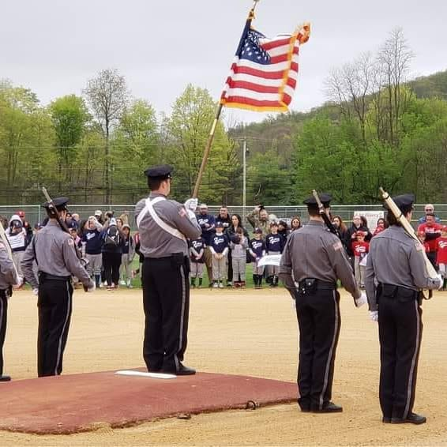

A Tradition Since 1954

Fishkill Little League has proudly served families across Southern Dutchess County since 1954. From Tee Ball through Senior divisions, our mission is to teach teamwork, sportsmanship, confidence, and leadership through baseball and softball.
Today we welcome players from Fishkill, Beacon, East Fishkill, Glenham, Brinckerhoff and neighboring communities.
Spring 2027 Registration
Opening Day
April 3, 2027
Rain Date
April 10, 2027
Player Evaluations
March 7, 2027 Brinckerhoff Elementary School
Register Your PlayerVolunteer Driven

Fishkill Little League is operated entirely by volunteers. Coaches, team parents, concession workers, field crews, board members, and sponsors make every season possible.
Every family helps build a stronger community.
Volunteer OpportunitiesMore Than Baseball and Softball
More than seventy years of history. Thousands of players. Hundreds of volunteers. Generations of Fishkill families.
Explore Our HistoryMeet Our Community Sponsors
Local businesses and community organizations help keep Fishkill Little League on the field.